速览
这次完全是杂谈：樱井小时候怎样接触游戏。最初碰到电子游戏的记忆，大概是 Pong 那样用可变电阻旋钮移动球拍的游戏：用手拧旋钮，电视里的东西就直接动，而且闪闪发光——对小樱井是巨大的感动。1978 年左右太空侵略者热潮时他 7～8 岁；热潮将尽时，各式各样的街机林立。说个本地话题：家附近有家超市「忠实屋」，周日全家基本都去采购；到了超市，父母给他 200 日元，他握着就直奔游戏角，父母去买东西——那时孩子与父母分开行动很正常，现在可不得了。200 日元能玩 4 次 50 日元的游戏，所以边仔细挑选边玩；用完就去玩具区，那里有各种游戏机可以玩，等父母买完来接再回家。（忠实屋现在好像成了购物中心，无所谓的情报。）另外也常去离家近、城市大的立川：店和游戏中心都很大，除了用零花钱玩，当时百货店等常会突然办游戏大会、遥控车大会，不用预约马上能参加，他有时两手抱着不同大会的奖品回家——游戏好像还挺拿手。他还在各种店里接触了买不起的 PC 与 PC 游戏（真正拥有 PC 是高中时）。题外话：日本 Falcom 当时在立川，PC 软件店和开发室并设，开发现场从店里看得一清二楚——那可能是他第一次亲眼看到厂商的制作现场。FC 1983 年登场的冲击自不必说，但之前也已有大量游戏；FC 前后，街机、家用机、PC 各自推出各种游戏，一年后技术就大幅进步的高速成长时代，给他的刺激无法估量。当然也有其他爱好，不只游戏，什么都很刺激。他认为童年享受的东西和那份喜悦，会极大地影响长大后的思考；如今他成为游戏制作者，也许正在影响某个陌生人的童年。日本最大的儿童杂志《CoroCoro》2019 年调查中，最受欢迎的爱好是电子游戏，其中最受欢迎的是《大乱斗 特别版》；CoroCoro 正是他小时候创刊的，那时完全没想到自己会做娱乐工作——世代交替真有趣。他最初被感动的是画面里的东西闪闪发光地动，从一开始就有高度游戏的世代会怎么感受呢？
1. 最初的感动 0:04
最初碰到电子游戏的记忆，大概是 Pong 那种用可变电阻旋钮移动球拍的游戏。
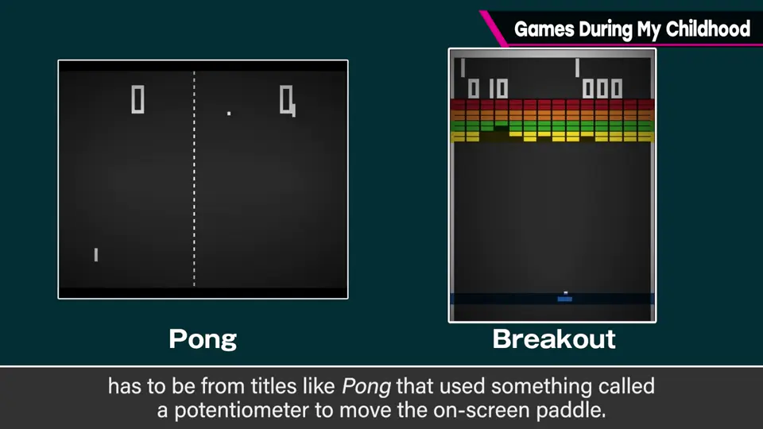
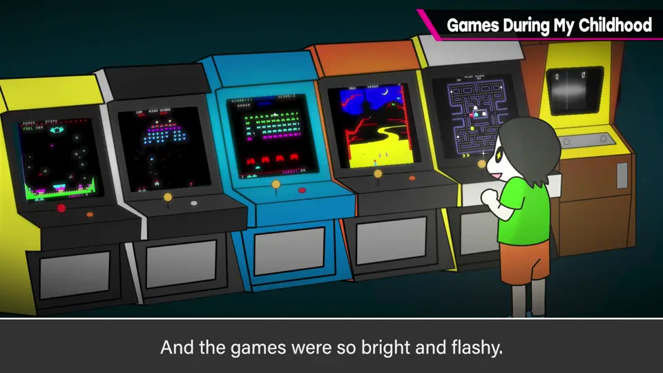
1978 年左右太空侵略者热潮时他 7～8 岁；热潮将尽时，各式各样的街机林立。
2. 周日的 200 日元 0:49
家附近有家超市「忠实屋」，周日全家基本都去采购。到了超市，父母给他 200 日元，他就直奔游戏角，父母去买东西。
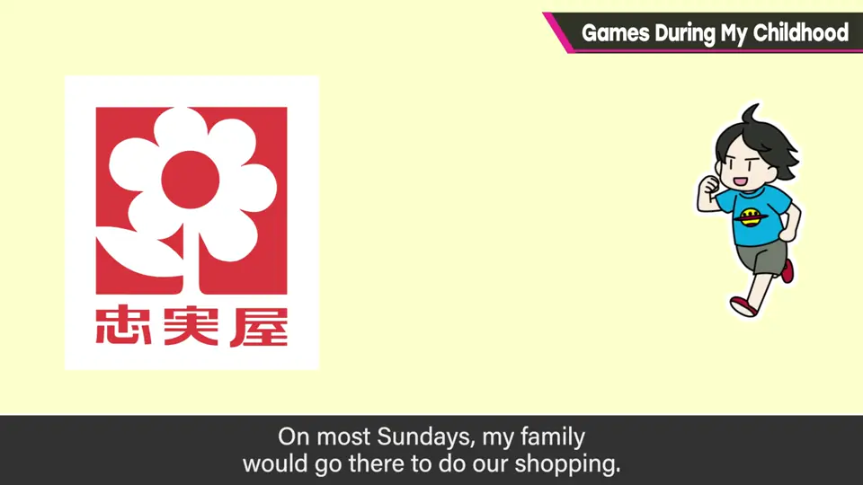
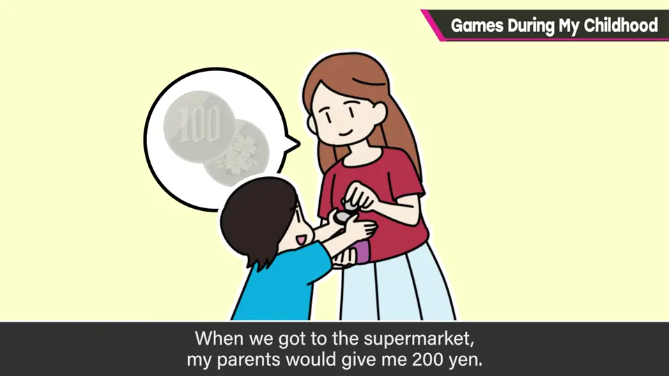
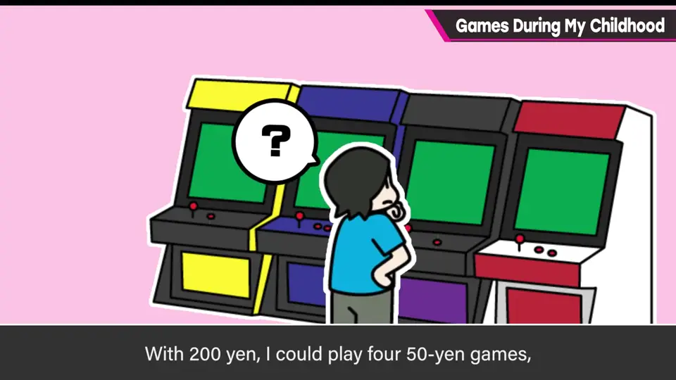
那时孩子和父母分开行动很正常——现在可不得了。
- 200 日元能玩 4 次 50 日元的游戏，所以仔细挑选。
- 用完就去玩具区，试玩那里的各种游戏机，等父母买完来接再回家。
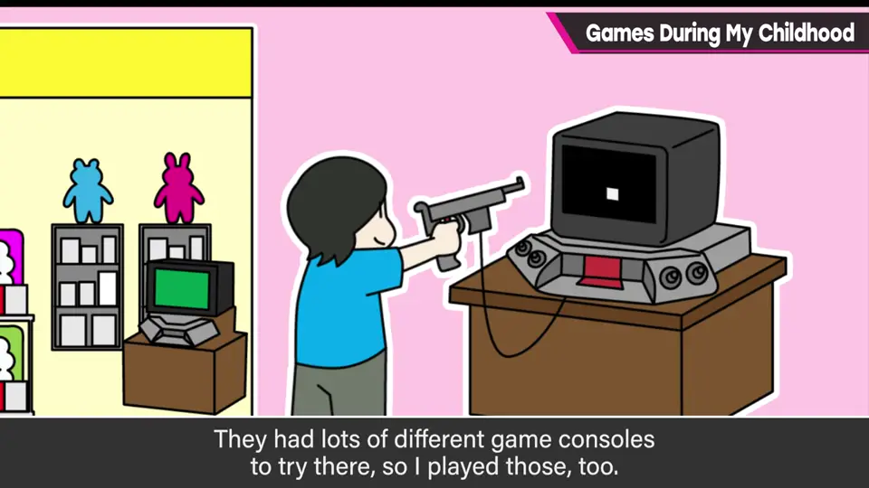
3. 立川：大会与 PC 2:04
也常去离家近、城市大的立川：店和游戏中心都很大。
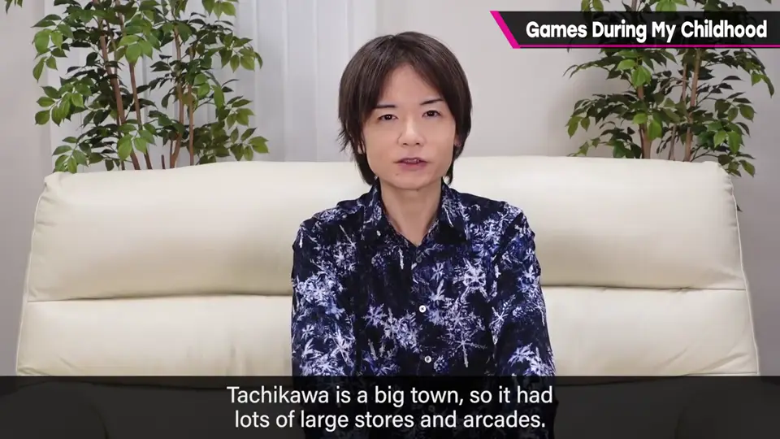
当时百货店等常会突然办游戏大会、遥控车大会，不用预约马上能参加。他有时两手抱着不同大会的奖品回家——游戏好像还挺拿手。
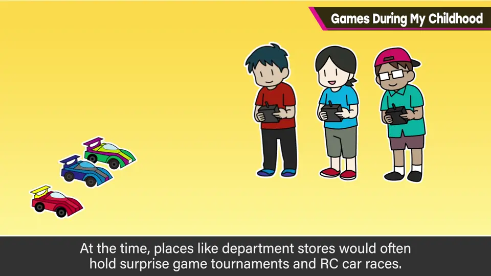
他还在各种店里接触到买不起的 PC 与 PC 游戏，真正拥有 PC 是高中时。
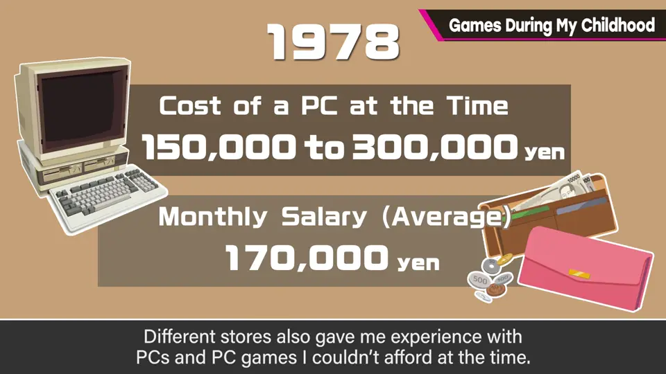
4. 日本 Falcom 的开发室 2:55
题外话：日本 Falcom 当时在立川，PC 软件店和开发室并设，开发现场从店里看得一清二楚——现在完全不可能。
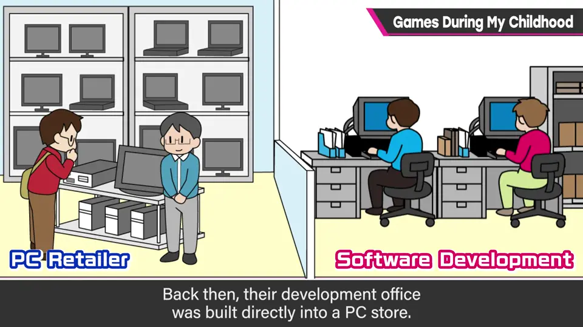
5. 闪闪发光的时代 3:25
FC 1983 年登场的冲击自不必说，但之前已有大量游戏。FC 前后，街机、家用机、PC 各自推出各种游戏，一年后技术就大幅进步——那是高速成长的时代，刺激无法估量。
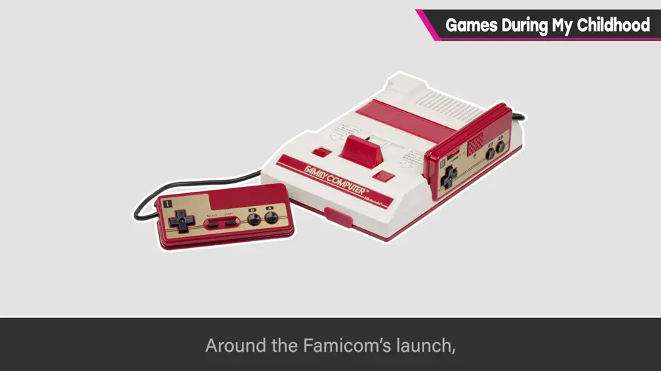
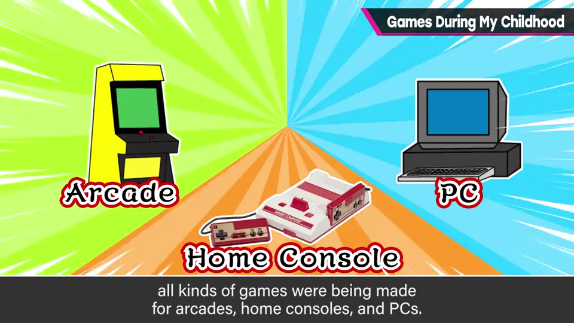
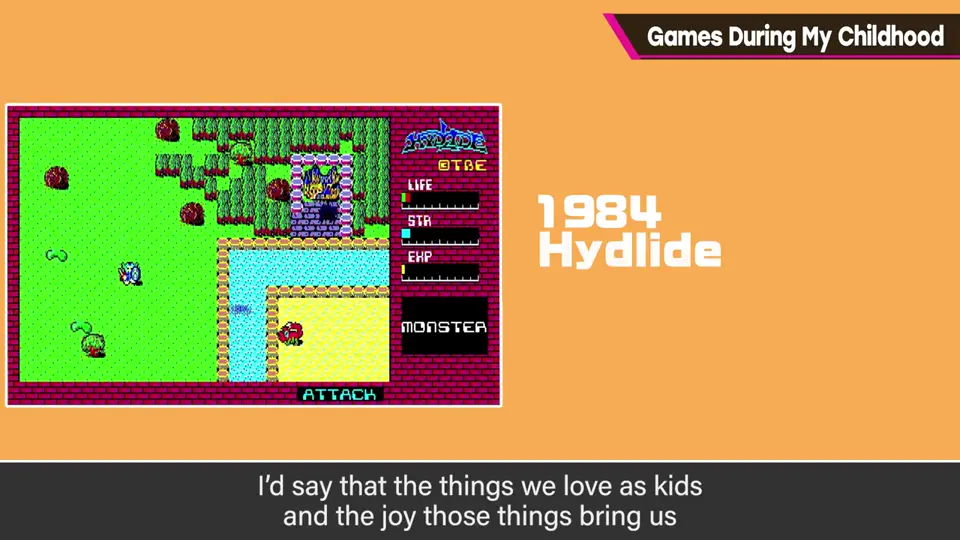
6. 童年影响未来 4:05
《CoroCoro》2019 年调查中，最受欢迎的爱好是电子游戏，其中最受欢迎的是《大乱斗 特别版》。CoroCoro 正是他小时候创刊的，那时完全没想到自己会做娱乐工作——世代交替真有趣。
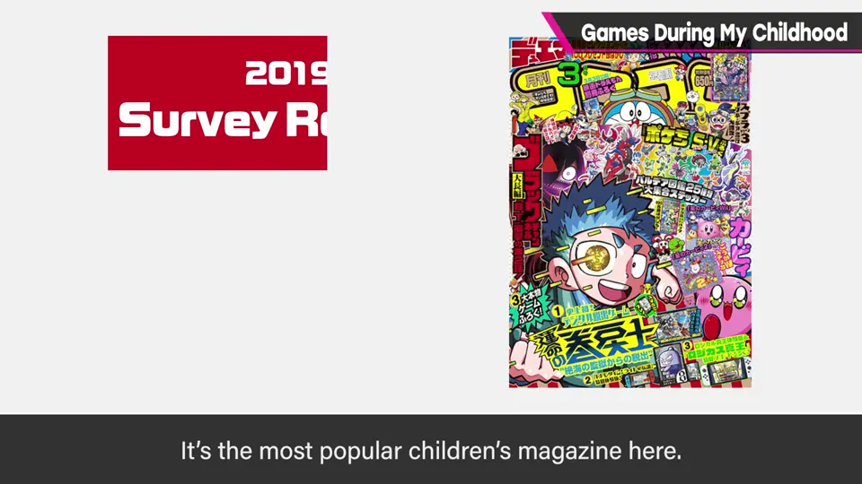
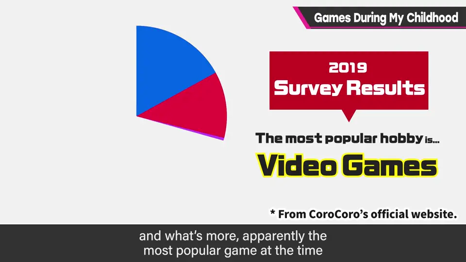
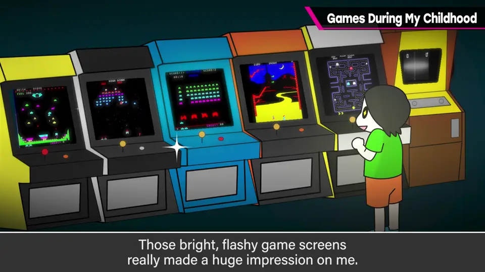
今天孩子们玩的东西，会影响将来的游戏吗？他最初的感动是画面里的东西闪闪发光地动——从一开始就有高度游戏的世代，又会怎么感受呢？
自测题
1. 樱井最早的电子游戏记忆是什么？为什么让他感动？
Pong 式旋钮游戏；拧旋钮画面里的东西直接动、还闪闪发光。 0:28
2. 周日在超市，他如何使用 200 日元？
50 日元一局玩 4 次，仔细挑选；用完再去玩具区试玩各种主机。 1:31
3. 日本 Falcom 在立川的店有什么特别之处？
软件店与开发室并设，开发现场从店里就能看到，可能是他第一次看到制作现场。 3:02